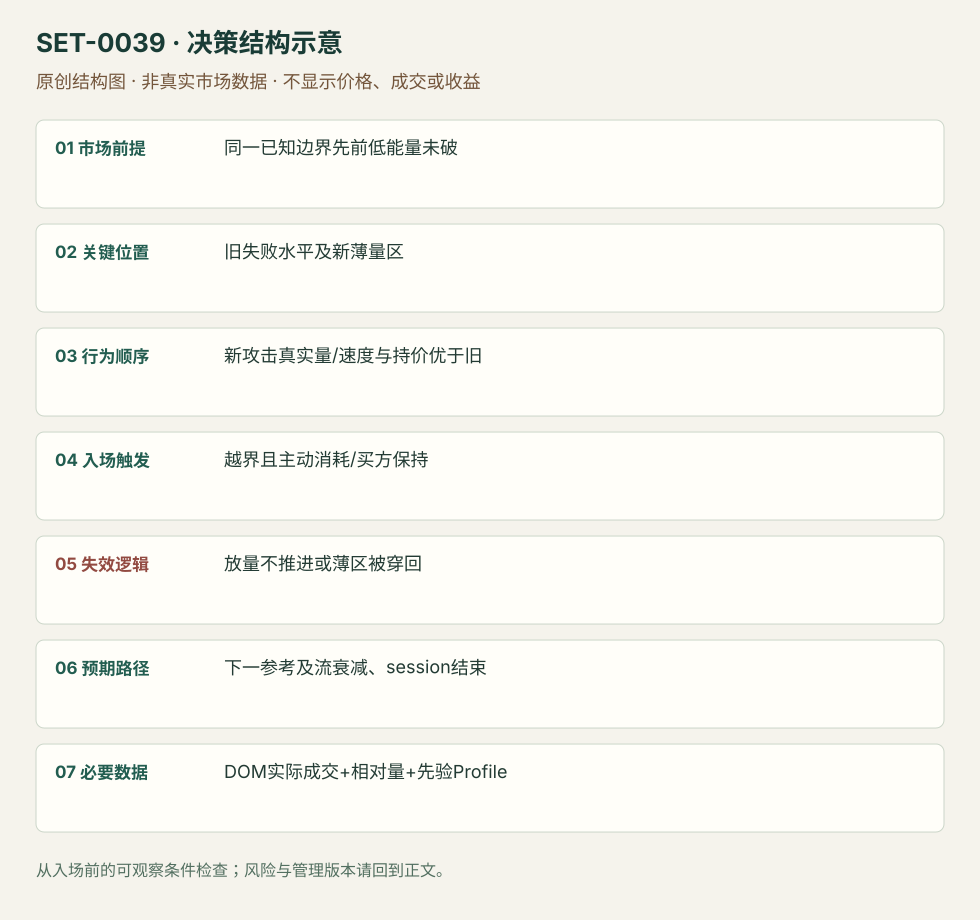

同一水平前后成交能量改变的突破
Volume Energy-change Break · SET-0039 · reviewed · v1.0.0
盈利证据：not_established。审查范围与来源版本见第13节；未知字段保留缺失原因。
1. 名称与快速概览
先前同一边界的尝试没有突破能力，后来攻击的真实成交强度、速度与持价都改变，交易强度差异支持的突破。不能只把最新一根量柱最大当理由。
记录口径：PA supporting；必要数据 OHLC、volume、DOM、volume_profile。名称性质：编辑性描述名，英文保留来源术语以便检索。reviewed 只表示本条规则与证据记录审查通过，盈利状态为 not_established。
2. 本质与行为假说
比较同位置两轮主动性，降低把常见触碰误认突破的机会。来源“能量”需拆成成交相对量、价格推进和反向能力，不能神秘化成不可量化感觉。
3. 适用市场与环境
源例原油40.35既有阻力，多次低能量测试后下一轮改变。需要产品自身历史节奏和同日基准，不能把某固定合约数量套不同深度产品。
来源实用市场：原油期货。
Session：来源原油期货盘中，图时区/完整session未标；实际复盘要锁定产品电子交易日与现金活动段，并在计划段结束前平仓。
跨市场：本版不主张已经验证的跨市场迁移；更换市场必须重定数据来源、流动性与session。
4. 出现前的观察清单
保存旧失败尝试时的量/速度，固定边界和上下节点；先列本次必须改变哪些观测。DOM挂单大小本身不作触发。
5. 形成过程与状态转换
旧尝试停顿 → 回撤 → 新一轮相对成交提高 → bid保持/offer被真实消耗 → 越界 → 留薄量区且回落不能穿回 → 延续。
6. Entry trigger 与执行方式
来源在新攻击力量显现且边界被拿时买入；破后薄区保持给持有/再次确认。早在破前买必须记为更早版，不能统一标40.35无滑点。
7. Invalidation 与止损逻辑
原例40.30下方、接近薄区破坏；迁移时换成该次破位枢轴/LVN下方。若放量无推进、重新回到旧范围，能量解释被否认。
8. Exit、target 与 trade management
原例40.80前参考，并观察回抽与主动买入衰退；目标只属该图。数据发布前留风险路线，session结束前退出。
9. 常见 variations
边界为区间高/低、阻力或其他先验参考是位置版本；添加Profile只是管理层。本条必需同位前后强度比较，不等价一般放量突破。
10. 失败方式与不交易条件
新成交仍无价格推进（可能吸收）；大报价撤走没有成交；时间段天然量变未标准化；破位后薄区被重新填厚。
11. 与相近 setups 的区别
12. 图表与案例解读
已看1/2/3对照图，能看相同水平前后价/量差异；速度与bid保持来自正文，未观看回放。
- [VIS-000041] Execution zone and energy change measured by relative volume；定位：First touches1–2 versus energy change3。蓝线40.35附近先前两次停顿，第三次量柱与推进不同；图不能直接测DOM动态。 验证：chart_viewed。

本地原创示意（VIS-000096，非真实市场数据）：

小屏阅读可打开原尺寸示意图并缩放。

此图用于对照识别顺序与风险定义；不计入真实案例覆盖率。
视觉材料元数据与查看范围
- VIS-000041 · real_source_chart / structure_and_trigger / chart_viewed
品种：原油期货；日期：未知/不适用；周期：未知/不适用；时区：未知/不适用
日期未在图中核对；周期未在图中核对；时区未在图中核对；来源图表不是成交审计 - VIS-000096 · synthetic_structure_diagram / illustration_only / generated_not_market_evidence
品种：未知/不适用；日期：未知/不适用；周期：未知/不适用；时区：未知/不适用
无真实品种、日期或价格：这是结构示意
13. 证据、分歧与未知项
Axia具体案例与Jigsaw独立动量定义相容，但独立核心策略验证有限。文章引用的动量速度没有在本研究做动态测量。
- [EVD-000078] Axia Futures，《Breakout Energy Change Trade》，SRC-0029；定位：previous40.35 stall / relative volume / bids holding /40.80 target。支持：此前40.35附近缺能量，后次攻击量与速度提高且bid保持、offer被拿；破位后LVN守住，风险40.30下、目标40.80。
- [EVD-000079] Peter Davies，《Practical Application of Order Flow, Part 2》，SRC-0002；定位：PDF页序13 Momentum trading。支持：主动扫报价并继续移动与大量成交却不动不同；静态大订单不等于动量，独立概念限制。
审查边界：来源份数与独立核心核验分开；当前类别为 independent_context_only。正文中的概念、官方事实、衍生解说或同族资料只按其支持范围使用。
14. 可用于复盘的检查表
- ☐ 下单前的前提可核对：同一已知边界先前低能量未破
- ☐ 事前标记位置：旧失败水平及新薄量区
- ☐ 行为按顺序出现：新攻击真实量/速度与持价优于旧
- ☐ 实际触发符合选定版本：越界且主动消耗/买方保持
- ☐ 事先写明本次否定条件：放量不推进或薄区被穿回
- ☐ 目标/路径只用当时已知信息：下一参考及流衰减、session结束
- ☐ 数据满足 DOM实际成交+相对量+先验Profile；记录时间、点差、滑点、队列和未成交
- ☐ 记录截止平仓及规则偏离；正常亏损不事后改成“未成立”
15. 后续验证问题
同位置比较是否需按时段归一化？哪种能量指标最可复核？延迟等LVN保持能减少多少假突破？
双向相关导航
- SET-0030 领导市场先行的滞后市场 IB 突破 0039 只需同一产品相对成交能量改变；本条双市场先行不可删。
- SET-0047 厚市场被动承接的缓慢磨过 0047 不要求速度/主动量爆发，而以厚市场持续被动持价渐进执行。
- SET-0041 阶梯跳价后低量区保持的延续 0041 的核心是阶梯跳过薄区后反向流少；本条要求同位旧尝试与新尝试强度变化。